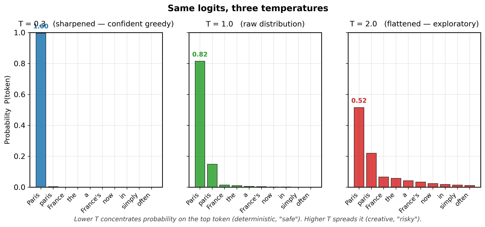
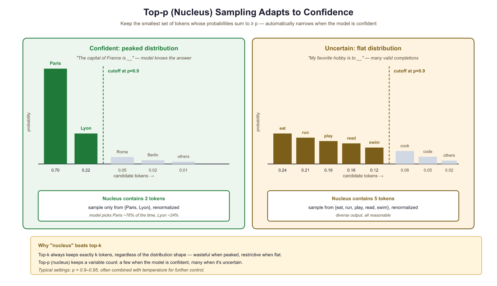

At temperature 0.0, I am a boring but reliable narrator. At temperature 2.0, I am a jazz musician who has lost the sheet music.
Greedy, Temperature-Unstable AI Agent
Why add randomness? Deterministic decoding (Section 4.1) produces the same output every time, which is great for translation but terrible for creative writing, conversation, and brainstorming. If you have not yet read Section 4.1, start there first; it introduces the greedy and beam search foundations that stochastic methods build on. Human language is inherently varied: ask ten people to complete the same sentence, and you will get ten different answers. Stochastic sampling introduces controlled randomness into the decoding process, producing diverse, interesting, human-like text. The challenge is finding the right balance: too little randomness yields repetitive, robotic text; too much yields incoherent gibberish. This section covers every major technique for controlling that balance. Every parameter introduced here (temperature, top-p, top-k, min-p) is a knob you will turn on every LLM API call, so understanding their joint effect on the sampling distribution is what separates a tuned LLM product from one that randomly hallucinates or returns boilerplate.
Temperature is sampling boldness: T near 0 always picks the safest token; high T rolls dice on the unlikely. Top-p crops the long tail before sampling, so the model can be bold among reasonable options without ever quoting from the 5% of nonsense at the end. Use temperature to set the energy scale; use top-p to set the ceiling.
Prerequisites
This section builds directly on the deterministic decoding strategies (greedy search, beam search) from Section 4.1. Understanding softmax, probability distributions, and how a model produces logits (from Section 3.1) is essential. The temperature and sampling parameters introduced here are the same ones you will use when calling LLM APIs later in the book.
4.2.1 Pure Random Sampling
The softmax over logits at temperature T is the Boltzmann distribution from statistical physics: P(token) = exp(logit/T) / Z, where Z is the partition function. T = 0 is absolute zero: the model always picks the single lowest-energy (highest-logit) token. Higher T populates higher-energy (lower-probability) states. Top-p sampling truncates the partition function at a free-energy threshold. These two parameters are not redundant: temperature sets the energy scale of the full distribution; top-p sets a hard ceiling on how far up the energy ladder the model can sample. Use both deliberately, not as arbitrary dials.
The most direct form of stochastic decoding is ancestral sampling: at each step, sample the next token from the full probability distribution. If the model says "the" has probability 0.15, "a" has 0.10, "quantum" has 0.0001, and so on across the entire 50,000-token vocabulary, you sample according to those exact probabilities.
This produces maximally diverse output, but the quality is often poor. The long tail of the vocabulary contains thousands of tokens that are individually very unlikely but collectively hold significant probability mass. Even if each improbable token has only a 0.001% chance, with 50,000 tokens in the vocabulary, sampling from the full distribution occasionally draws rare and contextually inappropriate words, derailing the generation.
In a typical 50,000-token vocabulary, the top 500 tokens might hold 95% of the probability mass for any given position. That means 49,500 tokens share the remaining 5%. Pure sampling treats that 5% as fair game, which is why you occasionally get bizarre outputs like "The president announced a new policy of flamingos." Every truncation method in this section (top-k, top-p, min-p) is a different strategy for taming this tail.
Who: A product team at an edtech company building an AI creative writing assistant for middle school students.
Situation: The assistant needed to generate story continuations that were creative and surprising, while remaining coherent and age-appropriate.
Problem: With default parameters (temperature 1.0, no truncation), the model produced outputs that frequently veered into nonsensical territory or included vocabulary too advanced for the target audience.
Dilemma: Lowering temperature made outputs safe but predictable and boring for students. Raising it produced exciting but often incoherent text. Top-k filtering helped, but finding the right k value was tricky because different story contexts needed different amounts of creativity.
Decision: The team adopted nucleus sampling (top-p = 0.92) combined with a moderate temperature of 0.85, plus a min-p filter of 0.05 to prune junk tokens.
How: They ran A/B tests with 200 students over two weeks, measuring engagement (time spent reading continuations), coherence ratings (teacher evaluation), and student satisfaction surveys across five parameter configurations.
Result: The nucleus sampling configuration increased student engagement by 28% compared to greedy decoding and reduced incoherent outputs from 15% to under 3%. Teacher coherence ratings improved from 3.2/5 to 4.4/5.
Lesson: Nucleus sampling adapts naturally to context: it allows more diversity when the model is uncertain and constrains output when the model is confident, making it more robust than fixed top-k across varied prompts.
Nucleus sampling controls which tokens are eligible for selection, but it does not change the relative probabilities among them. To control how sharply the model distributes probability across candidates, we need a different knob: temperature.
4.2.2 Temperature Scaling
Temperature in language models is not merely borrowed vocabulary from physics; it is the exact same mathematical object. In statistical mechanics, the Boltzmann distribution gives the probability of a system being in state $i$ as $P(i) \propto e^{-E_i / kT}$, where $E_i$ is the energy, $k$ is Boltzmann's constant, and $T$ is temperature. The softmax function with temperature, $P(i) \propto e^{z_i / T}$, is identical in structure, with logits $z_i$ playing the role of negative energies. This is not a coincidence: both systems are maximum-entropy distributions subject to a constraint on the expected value (energy in physics, log-likelihood in language models). At high temperature, the system explores many states uniformly (high entropy); at low temperature, it collapses toward the lowest-energy (highest-probability) state. This connection to the Boltzmann distribution also explains why temperature 1.0 is the "natural" setting: it recovers the model's trained distribution, just as $T=1$ in physics recovers the canonical ensemble. Any other temperature distorts the distribution away from what the model learned.
The term "temperature" comes from statistical mechanics, where it controls the randomness of particle states in a physical system. Setting temperature to zero makes a language model maximally deterministic, just as cooling a physical system to absolute zero forces all particles into their lowest energy state. Physicists invented the mathematical framework centuries before anyone thought of applying it to language generation.
It is tempting to say "higher temperature = more creative output," but this is misleading. Temperature reshapes the probability distribution over the vocabulary, making unlikely tokens more likely to be sampled. That is not creativity; it is increased randomness. True creativity involves novel combinations of ideas that are coherent and purposeful. A high-temperature model does not "think more creatively"; it simply rolls a less biased die across tokens, which sometimes produces surprising text and sometimes produces incoherent nonsense. The correct framing: temperature controls the entropy of the sampling distribution. High entropy means more uniform sampling (diverse but noisy); low entropy means peaked sampling (focused but repetitive). When people say "set temperature to 0.9 for creative writing," what they really mean is "allow more sampling diversity so the output is less predictable," which is a useful heuristic but not the same as creativity.
Temperature is the most fundamental control knob for stochastic sampling. Before applying softmax, we divide the logits by a temperature parameter T. You will encounter temperature again as a practical API parameter in Chapter 11 and as a training hyperparameter for knowledge distillation in Chapter 17:
The effect is intuitive:
- T = 1.0: The original distribution (no modification)
- T < 1.0: Sharpens the distribution, making high-probability tokens even more dominant. At T → 0, sampling becomes greedy decoding.
- T > 1.0: Flattens the distribution, giving low-probability tokens a better chance. At T → ∞, all tokens become equally likely (uniform sampling).
The formula divides logits by T, so the literal value T=0 would divide by zero. Production APIs (OpenAI, Anthropic, Hugging Face) silently special-case this and fall back to argmax (greedy decoding); they do not actually evaluate the softmax. This is why "temperature=0" outputs can still be non-deterministic across servers: floating-point reductions over many tokens are non-associative on GPUs, so two identical argmax calls may return different tokens when the top two logits are nearly tied. If you need bit-identical determinism, you need to fix the random seed AND pin the inference framework's reduction order, not just set temperature to 0.

# Temperature scaling: divide logits by T before softmax.
# Low T sharpens the distribution; high T flattens it toward uniform.
import torch
import torch.nn.functional as F
# Simulating temperature effect on a small vocabulary
logits = torch.tensor([5.0, 3.5, 2.0, 1.0, 0.5, 0.1, -1.0, -2.0])
tokens = ["the", "cat", "dog", "it", "my", "old", "an", "..."]
for temp in [0.3, 0.7, 1.0, 1.5, 2.0]:
probs = F.softmax(logits / temp, dim=-1)
top_prob = probs[0].item()
entropy = -(probs * probs.log()).sum().item()
print(f"T={temp:.1f} | P('the')={top_prob:.3f} | entropy={entropy:.3f} | dist={[f'{p:.3f}' for p in probs.tolist()]}")import torch.nn.functional as F
import torch
# Nucleus (top-p) sampling: sort tokens by probability, accumulate until
# the cumulative mass reaches p, then zero out all remaining tokens.
def top_p_sampling(logits, p=0.9, temperature=1.0):
"""Apply nucleus (top-p) filtering then sample."""
scaled_logits = logits / temperature
probs = F.softmax(scaled_logits, dim=-1)
# Sort probabilities in descending order
sorted_probs, sorted_indices = torch.sort(probs, descending=True)
cumulative_probs = torch.cumsum(sorted_probs, dim=-1)
# Find the cutoff: first index where cumulative prob exceeds p
# We keep tokens up to (but not including) this cutoff
sorted_mask = cumulative_probs - sorted_probs > p
sorted_probs[sorted_mask] = 0.0
# Renormalize
sorted_probs /= sorted_probs.sum()
# Sample from filtered distribution
sampled_index = torch.multinomial(sorted_probs, num_samples=1)
return sorted_indices[sampled_index]
# Demonstrate adaptive behavior
confident_logits = torch.tensor([8.0, 4.0, 1.0, 0.5, 0.1, -1.0, -2.0, -3.0])
uncertain_logits = torch.tensor([2.0, 1.8, 1.6, 1.4, 1.2, 1.0, 0.8, 0.5])
for name, logits in [("Confident", confident_logits), ("Uncertain", uncertain_logits)]:
probs = F.softmax(logits, dim=-1)
sorted_probs, _ = torch.sort(probs, descending=True)
cumsum = torch.cumsum(sorted_probs, dim=-1)
nucleus_size = (cumsum < 0.9).sum().item() + 1
print(f"{name}: nucleus size = {nucleus_size} tokens for p=0.9")
print(f" Probs: {[f'{p:.3f}' for p in sorted_probs.tolist()]}")
print(f" Cumsum: {[f'{c:.3f}' for c in cumsum.tolist()]}\n")
Common temperature ranges: 0.1 to 0.4 for factual Q&A and code generation (favoring accuracy); 0.6 to 0.8 for general conversation; 0.9 to 1.2 for creative writing and brainstorming. Temperatures above 1.5 are rarely useful in production. Most API providers (OpenAI, Anthropic, Google) expose temperature as a parameter, and it is typically the first knob users should tune. For practical guidance on configuring these parameters through APIs, see Chapter 12: Prompt Engineering.
The temperature-scaled softmax is not merely named after statistical mechanics; it is mathematically identical to the Boltzmann distribution that describes the probability of physical states in a thermal system. In physics, P(state) is proportional to exp(negative energy / kT), where T is temperature and k is Boltzmann's constant. In language models, the logits play the role of negative energy: higher-logit tokens are "lower energy" (more favored) states. This connection runs deeper than notation. The Boltzmann distribution maximizes entropy subject to a constraint on expected energy, meaning it is the least biased distribution consistent with the model's preferences. Temperature thus controls the tradeoff between exploitation (low T, choosing high-confidence tokens) and exploration (high T, sampling diversely), the exact same exploration-exploitation tradeoff that governs simulated annealing in optimization, thermodynamic processes in chemistry, and reinforcement learning in Section 18.1.
4.2.3 Top-k Sampling
Top-k sampling (Fan et al., 2018) restricts sampling to the k most probable tokens at each step. All other tokens have their probability set to zero, and the remaining probabilities are renormalized to sum to 1.
This eliminates the long tail problem: no matter how flat the distribution is, only k tokens are ever considered. However, top-k has a significant limitation: the optimal value of k varies depending on the context. When the model is very confident (e.g., after "The capital of France is"), even k=10 might include irrelevant tokens. When the model is uncertain (e.g., after "I enjoy"), k=10 might be too restrictive, cutting off perfectly valid continuations.
import torch.nn.functional as F
import torch
# Top-k sampling: keep only the k highest-scoring tokens,
# set the rest to -inf, then sample from the truncated distribution.
def top_k_sampling(logits, k=50, temperature=1.0):
"""Apply top-k filtering then sample from the result."""
# Apply temperature
scaled_logits = logits / temperature
# Find the k-th largest value as threshold
top_k_values, _ = torch.topk(scaled_logits, k)
threshold = top_k_values[..., -1, None]
# Zero out everything below threshold
filtered = scaled_logits.masked_fill(scaled_logits < threshold, float('-inf'))
# Convert to probabilities and sample
probs = F.softmax(filtered, dim=-1)
return torch.multinomial(probs, num_samples=1)
# Example: sampling with different k values
logits = torch.tensor([5.0, 3.5, 2.0, 1.0, 0.5, 0.1, -1.0, -2.0])
tokens = ["the", "cat", "dog", "it", "my", "old", "an", "..."]
for k in [2, 4, 6]:
filtered = logits.clone()
threshold = torch.topk(filtered, k).values[-1]
filtered[filtered < threshold] = float('-inf')
probs = F.softmax(filtered, dim=-1)
active = [f"{tokens[i]}({probs[i]:.3f})" for i in range(len(tokens)) if probs[i] > 0]
print(f"k={k}: {', '.join(active)}")
Beginners often pick top-k=200 or top-k=500 thinking it will produce more creative text. In practice, the top tokens already absorb most of the probability mass, so once k is past ~50, increasing it further changes almost nothing; you only reach junk tokens whose probability is so low they would rarely be sampled anyway. Diversity is governed jointly by temperature (which redistributes mass) and k (which caps the candidate set). Cranking k alone with temperature=0.7 yields outputs barely distinguishable from k=50.
4.2.4 Nucleus (Top-p) Sampling
Nucleus sampling (Holtzman et al., 2020) addresses top-k's fixed-size problem with an elegant idea: instead of keeping a fixed number of tokens, keep the smallest set of tokens whose cumulative probability exceeds a threshold p. This adapts automatically to the shape of the distribution.
When the model is confident, the nucleus might contain only 2 or 3 tokens. When the model is uncertain, it might contain 100 or more. This adaptivity is what makes top-p the most widely used sampling method in production systems.

In practice, you never implement sampling by hand. The transformers library handles temperature, top-k, top-p, and repetition penalty in a single generate() call:
Show code
from transformers import AutoModelForCausalLM, AutoTokenizer
model = AutoModelForCausalLM.from_pretrained("gpt2")
tokenizer = AutoTokenizer.from_pretrained("gpt2")
inputs = tokenizer("The meaning of life is", return_tensors="pt")
output = model.generate(
**inputs, max_new_tokens=50,
do_sample=True, temperature=0.8, top_p=0.92, top_k=50,
repetition_penalty=1.2
)
print(tokenizer.decode(output[0], skip_special_tokens=True))pip install transformers
# Production equivalent using model.generate()
from transformers import AutoModelForCausalLM, AutoTokenizer
model = AutoModelForCausalLM.from_pretrained("gpt2")
tokenizer = AutoTokenizer.from_pretrained("gpt2")
inputs = tokenizer("The future of AI", return_tensors="pt")
output = model.generate(
**inputs, max_new_tokens=50,
temperature=0.8, top_k=50, top_p=0.95,
repetition_penalty=1.2, do_sample=True,
)Temperature reshapes the entire probability distribution (sharper or flatter). Top-p then truncates the reshaped distribution by removing the tail. Setting temperature=0.1 with top-p=0.9 is almost identical to temperature=0.1 alone, because the distribution is already so peaked that the nucleus contains only 1 to 2 tokens. To see top-p's effect, you need moderate temperature (0.7 to 1.0).
4.2.5 Min-p Sampling
Min-p sampling is a newer technique that takes a different approach to adaptive filtering. Instead of specifying a cumulative probability threshold, min-p sets a minimum relative probability: any token whose probability is less than min_p × max_probability is discarded.
This is conceptually simple and has appealing properties. When the model is very confident (top token at 0.95), even a min_p of 0.1 only keeps tokens above 0.095, resulting in a tiny nucleus. When the model is uncertain (top token at 0.05), the threshold drops to 0.005, allowing many tokens through. The behavior adapts naturally without the cumulative probability bookkeeping of top-p.
import torch.nn.functional as F
import torch
# Min-p sampling: discard any token whose probability falls below
# min_p times the top token's probability, adapting the cutoff dynamically.
def min_p_sampling(logits, min_p=0.1, temperature=1.0):
"""Apply min-p filtering then sample."""
scaled_logits = logits / temperature
probs = F.softmax(scaled_logits, dim=-1)
# Threshold: min_p * max probability
max_prob = probs.max()
threshold = min_p * max_prob
# Zero out tokens below threshold
filtered_probs = probs.clone()
filtered_probs[probs < threshold] = 0.0
# Renormalize and sample
filtered_probs /= filtered_probs.sum()
return torch.multinomial(filtered_probs, num_samples=1)
# Compare min-p behavior
for name, logits in [("Confident", confident_logits), ("Uncertain", uncertain_logits)]:
probs = F.softmax(logits, dim=-1)
max_p = probs.max().item()
threshold = 0.1 * max_p
kept = (probs >= threshold).sum().item()
print(f"{name}: max_p={max_p:.3f}, threshold={threshold:.4f}, kept={kept} tokens")
Top-k, top-p, and min-p are three approaches to the same anxiety: "what if the model picks something stupid from the long tail?" Top-k says "only consider the 50 most likely tokens" (rigid). Top-p says "consider just enough tokens to cover 90% of the probability mass" (adaptive). Min-p says "consider any token that is at least 10% as likely as the most likely one" (adaptive in a different direction). They all work, they all have evangelists, and choosing between them is a sampling debate that has consumed approximately one billion Reddit comments since 2022.
4.2.6 Typical Sampling
Typical sampling (Meister et al., 2022) takes an information-theoretic approach. The idea is that humans tend to produce words that are neither too predictable nor too surprising. Formally, typical sampling keeps tokens whose information content (negative log-probability) is close to the entropy of the distribution (the expected information content).
A token with probability 0.9 carries very little surprise (low information). A token with probability 0.0001 carries enormous surprise. Typical sampling favors the middle ground: tokens that are about as surprising as you would expect on average. This tends to produce text that feels natural and avoids both boring and incoherent extremes.
Typical sampling reframes the generation question: instead of asking "which tokens are most probable?" it asks "which tokens are most typical given the model's uncertainty?" This is a subtle but important distinction. In a high-entropy context, typical tokens might have relatively low individual probability, while in a low-entropy context, only the top 1 or 2 tokens are typical.
All the sampling strategies we have covered so far control which tokens are considered and how probabilities are distributed. Yet even with well-tuned sampling, language models have a persistent tendency to fall into repetitive loops. The next family of techniques tackles this problem directly by penalizing tokens that have already appeared.
- Temperature is the most fundamental knob: it scales logits before softmax, controlling how peaked or flat the distribution is. Lower values favor focus; higher values favor diversity.
- Top-k restricts sampling to a fixed number of tokens. Simple but not adaptive to context.
- Top-p (nucleus) keeps the smallest set of tokens exceeding a cumulative probability threshold, adapting naturally to model confidence. It is the most widely used method in production.
- Min-p filters by a minimum relative probability, offering an alternative adaptive approach with a simpler conceptual model.
- Typical sampling selects tokens whose information content is close to the distribution entropy, producing naturally "surprising" but not shocking text.
Show Answer
Show Answer
What's Next?
The discussion continues in Section 4.2a: Penalties, Combining Methods & Sampling Lab, which covers repetition / frequency / presence penalties, how to stack temperature with top-k/top-p in practice, and a hands-on lab that visualizes what each knob does to the distribution. After that, Section 4.3 turns to advanced decoding and structured generation.